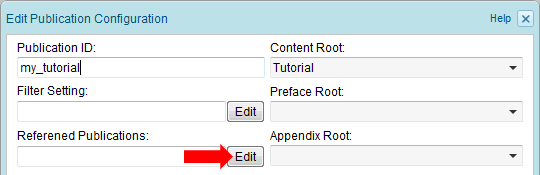
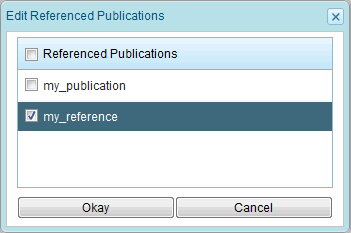
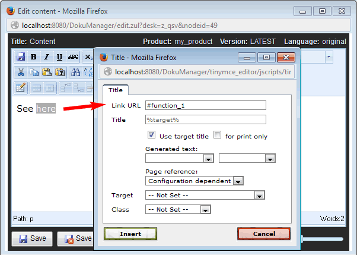
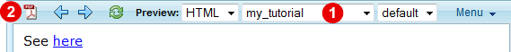
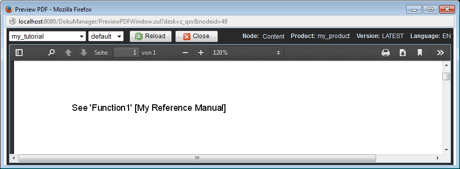
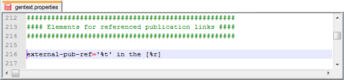

1.13.5. Inter-publication links
In the example of chapter Section 1.4.1, “Referencing sections” you have created a link within the "Tutorial" section that references a section within the "Reference Manual" section. As long as the "Tutorial" and the "Reference Manual" section are both contained in the exported publication, the link will be an "active" link. Furthermore, if the link option "Use target title" has been set, then the link text will automatically be replaced by the title of the referenced section. However, if the exported publication contains only the "Tutorial" section then the link to the content within the "Reference Manual" section is not an active link. Instead the link text is just rendered as static text.
In Section 1.11.2, “Inline inclusions” you have seen, how title-inclusion can be used to show the title of the referenced section, even if the referenced section is not contained in the same publication. However, this solution requires a lot of extra typing, especially if you additionally want to show the title of the publication that contains the referenced content.
Therefore, in Docmenta you can define which other publications are referenced from within a given publication. In our example, edit the publication configuration of the "my_tutorial" publication (see Section 1.8.1, “Publications”) and click the "Edit" button of the "Referenced Publications" field:

Figure 1.13.24. Editing Referenced Publications
In the opened dialog select the referenced publications, i.e. in our example select the publication-configuration ID of the reference manual (if a reference manual publication does not yet exist, then create a new publication configuration with the "Reference Manual" section as content-root; see Section 1.8.1, “Publications”):

Figure 1.13.25. Referenced Publications dialog
Click "Okay" to close the dialog. Click once more "Okay" in the publication configuration dialog to save the settings.
Next, if not already done, create a link from within the "Tutorial" section to a section in the "Reference Manual", e.g. edit a content-node in the "Tutorial" section and add a link to section "function_1" as shown in the following screenshot:

Figure 1.13.26. Creating a link to a section within the "Reference Manual"
To see how the inter-publication link will be rendered if the "my_tutorial" publication is exported, preview the content node within the "Tutorial" section and select the "my_tutorial" publication in the preview toolbar  . Then click the PDF preview button
. Then click the PDF preview button  :
:

Figure 1.13.27. Previewing the inter-publication link
As you can see, the link is rendered as static text in the format 'section-title' [publication title]:

Figure 1.13.28. PDF preview of inter-publication link
Note that the displayed publication title (here: "My Reference Manual") is the title of the publication as it has been entered in the publication configuration of the referenced publication (or the publication configuration ID if no title has been provided).
Changing the inter-publication link format
If the format 'section-title' [publication title] does not fit your needs, then you can define another format. To do this change the external-pub-ref property in the file  System >
System >  gentext.properties (see Section 1.13.4, “Gentext settings”).
gentext.properties (see Section 1.13.4, “Gentext settings”).
For example, to change the format of inter-publication links to 'section-title' in the [publication title], set the external-pub-ref property to the value '%t' in the [%r]:

Figure 1.13.29. Setting the external-pub-ref property
Two placeholders can be used within the property value: %t and %r.The placeholder %t denotes the title of the referenced section. The placeholder %r denotes the title of the publication that contains the referenced section.
Note:
If the external-pub-ref property is commented out, remove the leading # character. If the property does not exist in the gentext.properties file, then just add the property (since inter-publication links have been introduced in Docmenta 1.6, the property has to be added if a product has been created with Docmenta version 1.5 or earlier).